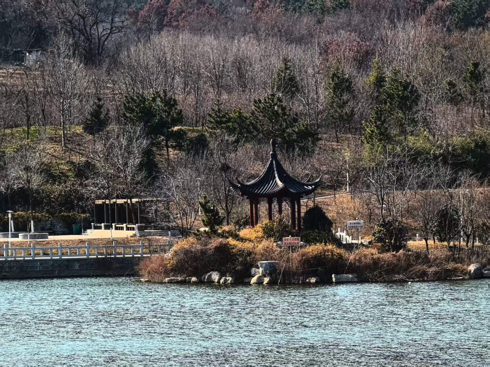
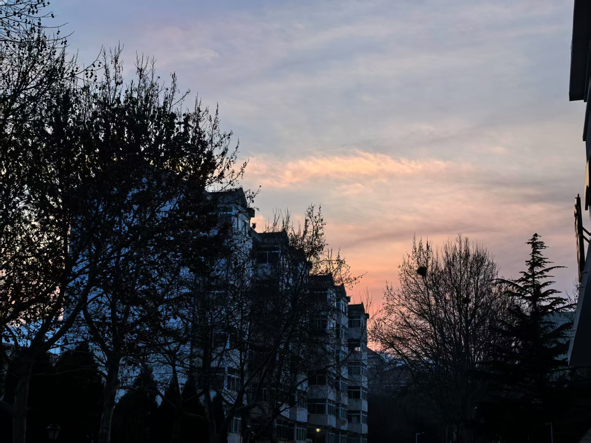
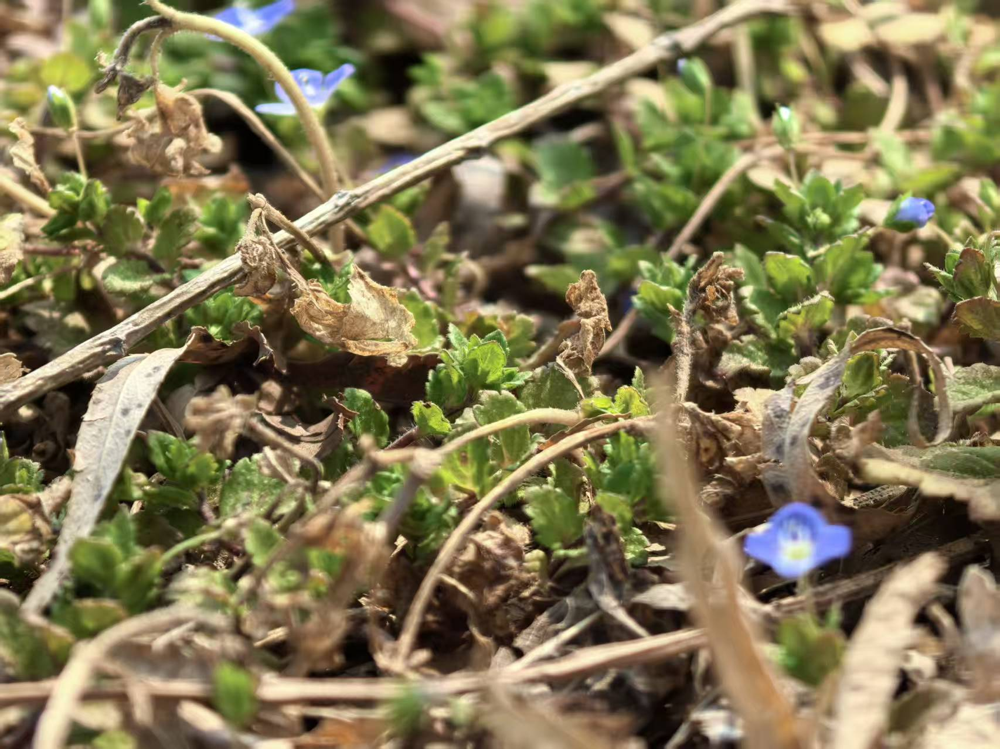
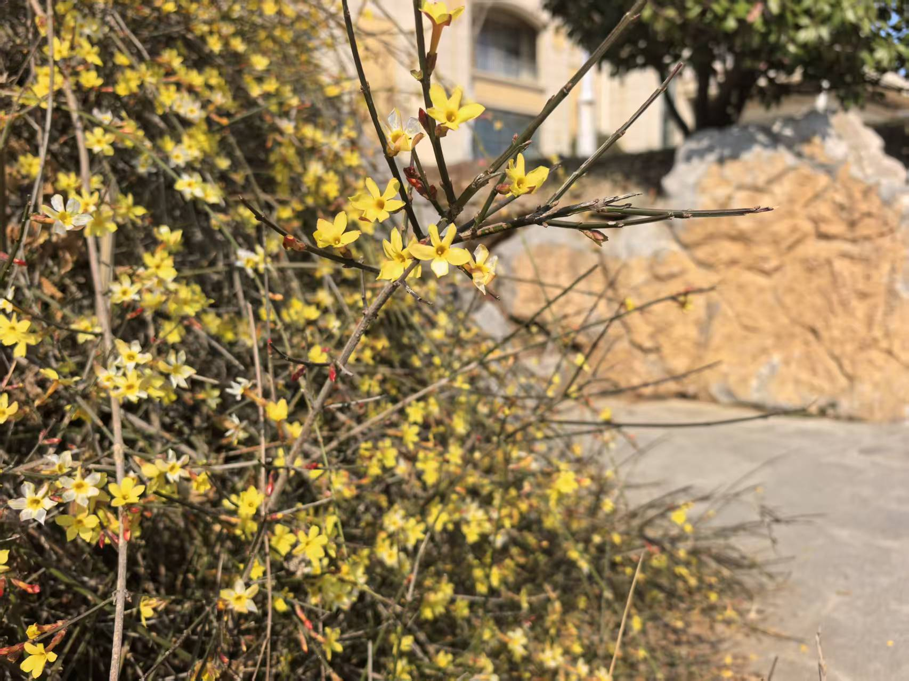
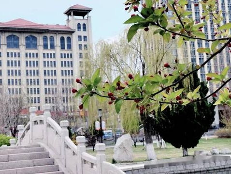
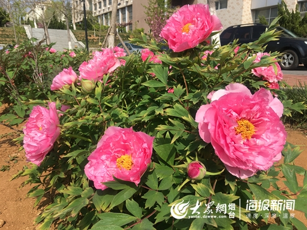
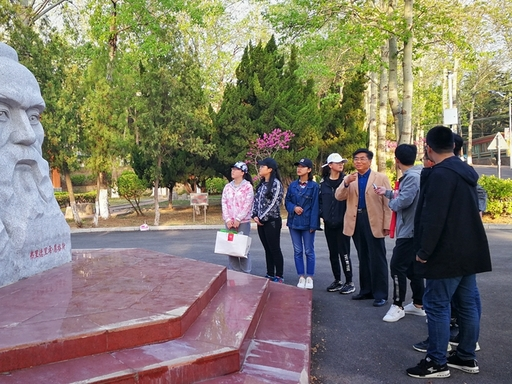

春风拂过鲁东大学，校园处处漾着温柔的春意。镜心湖冰雪消融，水波轻漾，岸边垂柳抽出新条，随风轻扬。路旁玉兰亭亭绽放，洁白素雅，海棠与桃花次第盛开，粉白相间，如云霞轻绕。新绿的枝叶衬着红砖楼宇，阳光洒落，满眼清新。鸟鸣伴着书页轻响，漫步其间，花香拂面，生机盎然，春日的明媚与校园的宁静相融，处处皆是动人景致
暮春时节，鲁大更添几分温婉。草木愈发繁茂，绿叶层层叠叠，遮住细碎日光。湖畔风软，柳条轻拂水面，泛起圈圈涟漪。各色花朵依旧盛放，微风过处，花瓣轻落，铺就一地温柔。学子们或在树下诵读，或沿湖漫步，青春身影与春光相映。群山环抱之中，校园静谧又鲜活，暖意融融，处处流淌着生机与朝气，让人沉醉在这温柔又蓬勃的春色里




钟楼・乳子湖・书香
春风拂过鲁东大学的钟楼，朱红的楼身与新抽的翠柳相映，古朴的钟声在晨光里悠悠回荡。乳子湖畔，垂柳拂水，玉兰、樱花沿堤盛放，粉白花瓣随风轻落湖面。湖畔的博物馆与现代教学楼错落而立，学子们或捧书静读于石凳，或三两漫步谈文论学，阳光透过花枝洒下斑驳光影。图书馆的落地窗映着满园春色，窗内是专注求知的身影，窗外是生机盎然的繁花，书香与花香交织，勾勒出春日校园最动人的人文景致。


牡丹园・校史路・青春
暮春的鲁东大学牡丹园繁花似锦，四千余株牡丹竞相绽放，红的热烈、白的圣洁、紫的典雅。花丛间，学子们或写生作画，或驻足留影，音乐爱好者在树下轻奏手风琴，欢声笑语伴着花香弥漫。不远处的校史路，石阶镌刻着学校近百年的风雨历程，两旁樱桃、梨树新绿满枝，春意盎然。马克思雕像前，青年学子沉思伫立；修读广场上，青春身影往来穿梭。百年文脉与春日生机相融，书写着鲁大独有的人文风华。

